Crear un Sitio Web con el Tema Libre Usando SSG Hugo y Desplegarlo en GitHub Pages y Cloudflare
Introducción
Crear un sitio web estático con Hugo es una excelente manera de desarrollar un blog o un sitio personal, aprovechando su velocidad y facilidad de uso. En este tutorial, he cubierto los pasos necesarios para crear un sitio utilizando Hugo, instalar y configurar el tema Walden, y luego desplegarlo en GitHub Pages para su publicación en línea. He detallado desde la instalación de Hugo y su configuración inicial hasta la integración de un flujo de trabajo de GitHub Actions para automatizar el proceso de despliegue.
Paso 1: Instalamos Hugo
Para poder crear sitios con Hugo, primero instalamos la herramienta. Fuimos a la página de releases de Hugo para descargar la versión adecuada. Elegimos un paquete .deb compatible con nuestro sistema operativo. Esto asegura una instalación específica para nuestra plataforma.
Después, utilizamos wget para descargar el archivo y apt para instalarlo. Finalmente, verificamos que Hugo estuviera instalado correctamente.
sudo apt update -y
wget https://github.com/gohugoio/hugo/releases/download/v0.135.0/hugo_extended_0.135.0_linux-amd64.deb
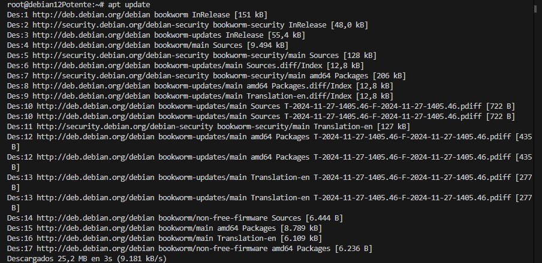 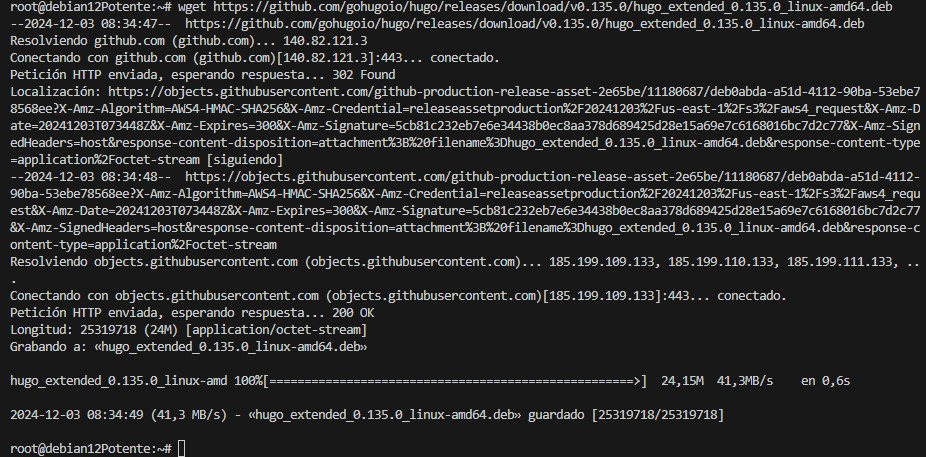
sudo apt install ./hugo_extended_0.135.0_linux-amd64.deb
hugo version
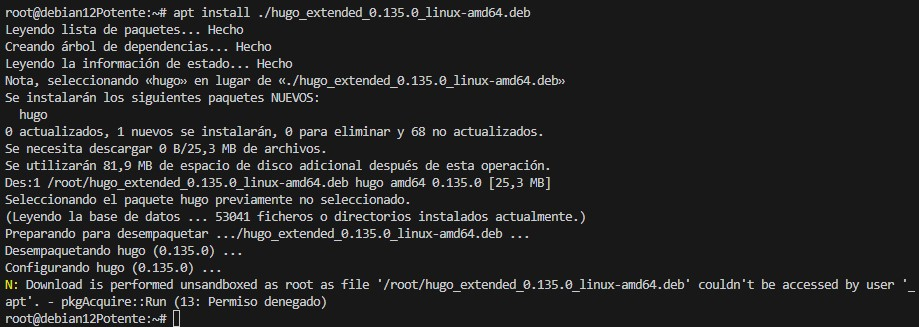
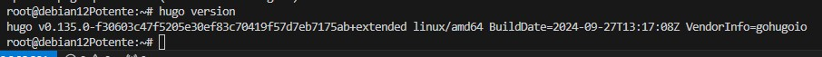
Paso 2: Creamos un repositorio vacío en GitHub
Para comenzar, configuramos un lugar donde guardar nuestro proyecto en línea. Abrimos nuestra cuenta en GitHub, hicimos clic en New, y creamos un repositorio vacío llamado actividad22_2_RRH. Dejamos el repositorio sin archivos adicionales como README.md o .gitignore.
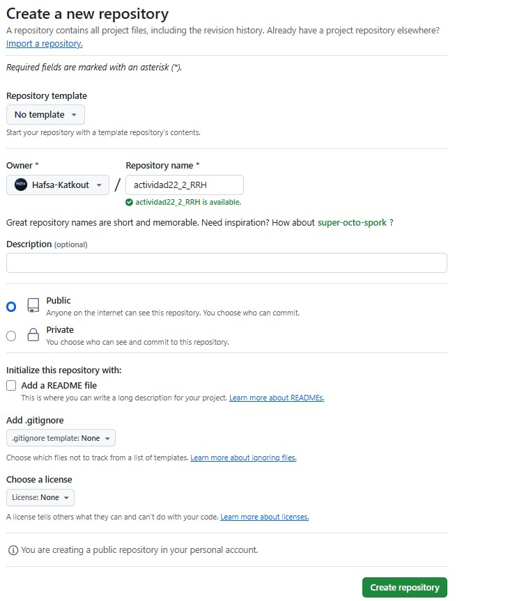
Paso 3: Clonamos el repositorio vacío
En nuestra máquina local, fuimos al directorio donde queríamos trabajar. Descargamos el repositorio vacío de GitHub utilizando git clone. Después de clonar, entramos en el directorio para empezar a trabajar.
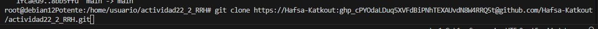
Y luego combromos si el repositorio en local esta conectado con el que está en github : con git remote -v
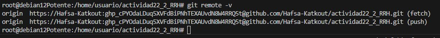
Paso 4: Inicializamos un proyecto Hugo en el repositorio
En el directorio del repositorio clonado, creamos la estructura básica de Hugo directamente. Esto incluyó carpetas como content, layouts, y el archivo de configuración config.toml.
hugo new site .
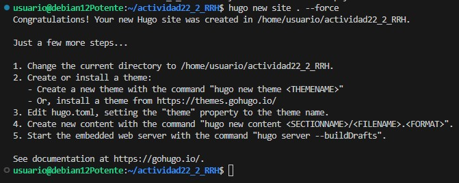
Paso 5: Configuramos el tema Walden
- Añadimos el tema como submódulo
Decidimos usar el tema Walden. Lo descargamos como submódulo para facilitar futuras actualizaciones. Esto lo colocó en la carpetathemes.
```bash git submodule add https://github.com/Homecat805/hugo-theme-walden.git themes/hugo-theme-walden
``` 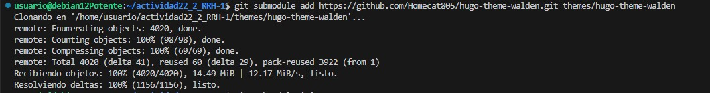
- Iniciamos y actualizamos los submódulos
Hugo requiere que los submódulos estén inicializados y actualizados para que funcionen correctamente.
bash
git submodule init
git submodule update
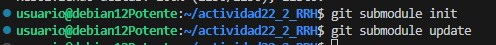
- Copiamos los archivos de ejemplo
Para comenzar rápidamente, copiamos los archivos de ejemplo del tema al directorio raíz.
bash
cp -rf themes/hugo-theme-walden/exampleSite/* ./
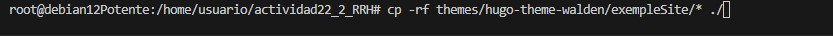
- Configuramos el tema en el archivo
hugo.toml
Agregamos el tema Walden a la configuración del sitio para que Hugo lo utilice.
bash
echo "theme = 'hugo-theme-walden'" >> hugo.toml

Paso 6: Creamos posts y añadimos imágenes
-
Creamos publicaciones
Las publicaciones se guardan en la carpetacontent/en/blog/carpeta del post /index.md. Segun el tema walden las carpetas de los posts tienen que tener los nombres : sample1,sample2,3...
Por ejemplo, creamos un nuevo post así: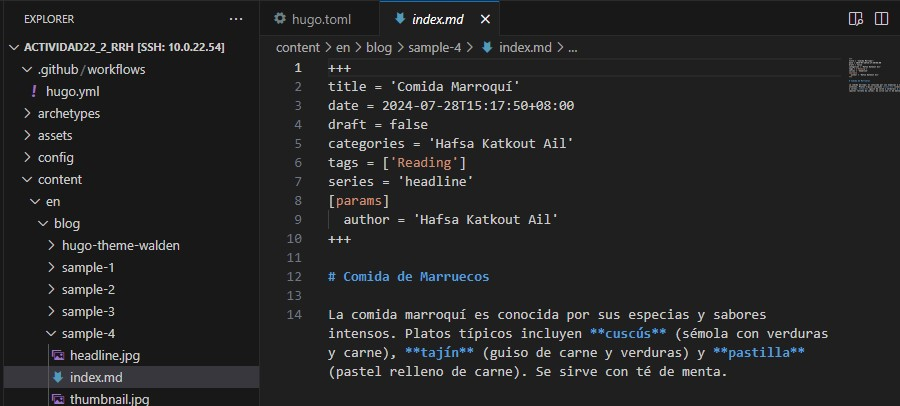
Para que otras personas puedan hacer cambios en este repositorio en local y añadir posts hacemos un pull request : Ejemplo Desde Rimsha : 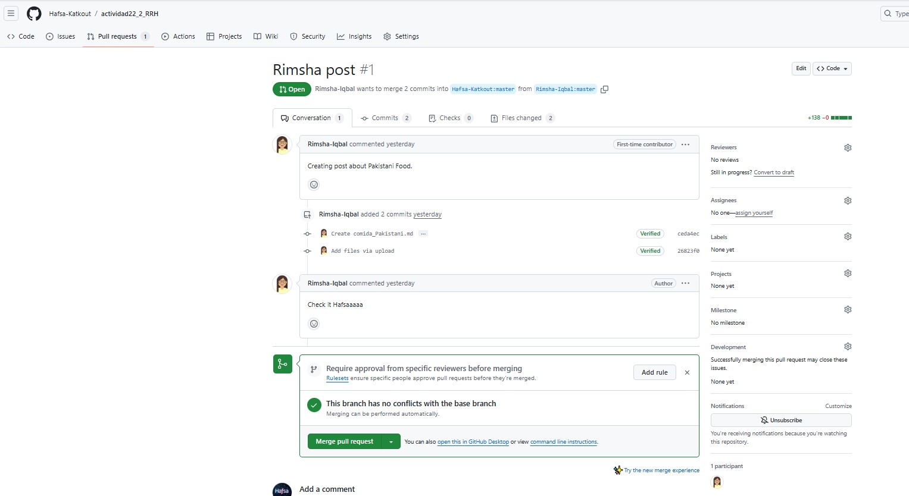 Ejemplo Desde Rodrigo : 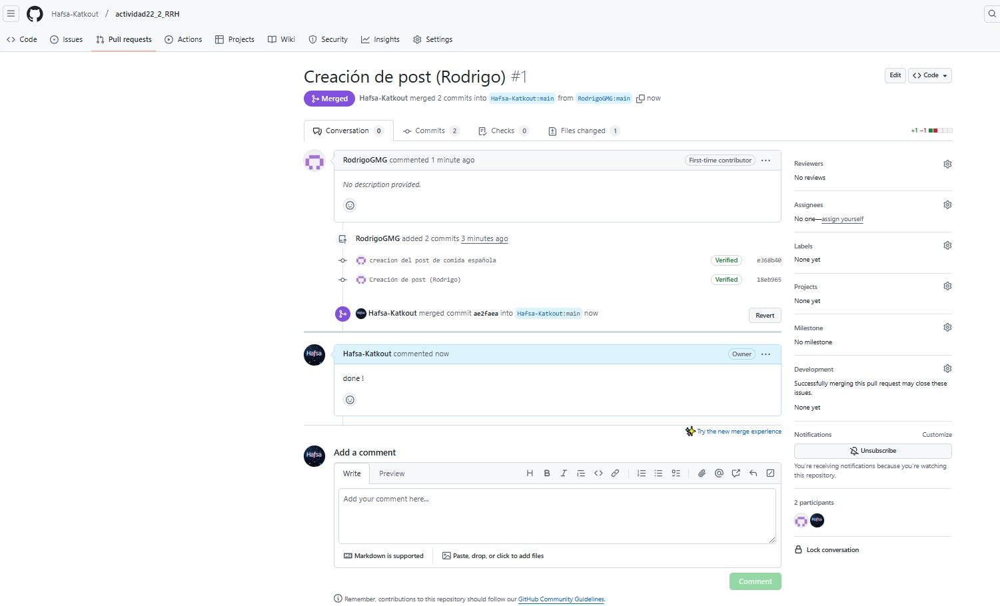
-
Almacenamos imágenes
Las imágenes del sitio se colocaron en el directoriocontent/en/blog/nombre de la carpeta del post/imagen. Esto asegura una estructura organizada. Segun el tema walden las imagenes tienen que ser 2 de los nombres siguentes : headline.jpg , y thumbnail.jpg ejemplo :
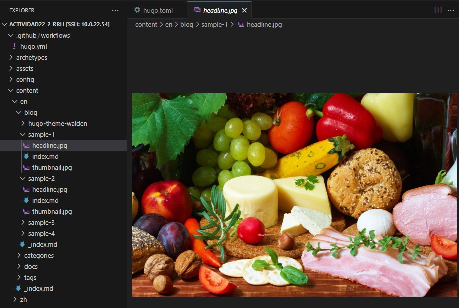
-
Ejemplo de la structura

Paso 7: Probamos el sitio localmente
Levantamos el servidor de desarrollo para revisar el sitio localmente. Usamos la opción --bind para asegurarnos de que fuera accesible desde otras direcciones IP en la misma red.
hugo server --bind 10.0.22.201
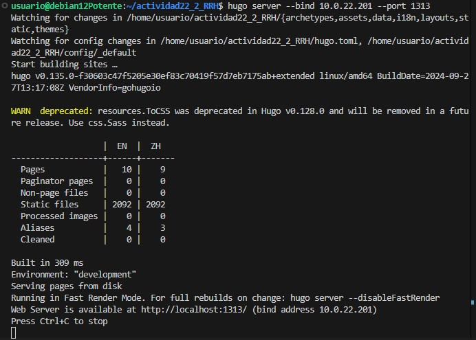
Visitamos el sitio en http://10.0.22.201:1313 para verificar su apariencia.

Paso 8: Construimos el sitio
Generamos los archivos estáticos del sitio. Estos se guardaron en el directorio public. Esto es necesario para subir el sitio a cualquier plataforma de hosting.
hugo
Que tambien el commando :hugo server --bind 10.0.22.201 lo hace : Ejemplo :
Paso 9: Configuramos el despliegue en GitHub Pages
Creamos un archivo .github/workflows/hugo.yml para automatizar el despliegue en GitHub Pages. Este archivo contiene instrucciones para compilar el sitio con Hugo y desplegarlo.
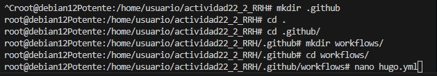
Contenido de hugo.yml:
# Sample workflow for building and deploying a Hugo site to GitHub Pages
name: Deploy Hugo site to Pages
on:
# Runs on pushes targeting the default branch
push:
branches:
- main
# Allows you to run this workflow manually from the Actions tab
workflow_dispatch:
# Sets permissions of the GITHUB_TOKEN to allow deployment to GitHub Pages
permissions:
contents: read
pages: write
id-token: write
# Allow only one concurrent deployment, skipping runs queued between the run in-progress and latest queued.
# However, do NOT cancel in-progress runs as we want to allow these production deployments to complete.
concurrency:
group: "pages"
cancel-in-progress: false
# Default to bash
defaults:
run:
shell: bash
jobs:
# Build job
build:
runs-on: ubuntu-latest
env:
HUGO_VERSION: 0.134.2
steps:
- name: Install Hugo CLI
run: |
wget -O ${{ runner.temp }}/hugo.deb https://github.com/gohugoio/hugo/releases/download/v${HUGO_VERSION}/hugo_extended_${HUGO_VERSION}_linux-amd64.deb \
&& sudo dpkg -i ${{ runner.temp }}/hugo.deb
- name: Install Dart Sass
run: sudo snap install dart-sass
- name: Checkout
uses: actions/checkout@v4
with:
submodules: recursive
fetch-depth: 0
- name: Setup Pages
id: pages
uses: actions/configure-pages@v5
- name: Install Node.js dependencies
run: "[[ -f package-lock.json || -f npm-shrinkwrap.json ]] && npm ci || true"
- name: Build with Hugo
env:
HUGO_CACHEDIR: ${{ runner.temp }}/hugo_cache
HUGO_ENVIRONMENT: production
TZ: America/Los_Angeles
run: |
hugo \
--gc \
--minify \
--baseURL "${{ steps.pages.outputs.base_url }}/"
- name: Upload artifact
uses: actions/upload-pages-artifact@v3
with:
path: ./public
# Deployment job
deploy:
environment:
name: github-pages
url: ${{ steps.deployment.outputs.page_url }}
runs-on: ubuntu-latest
needs: build
steps:
- name: Deploy to GitHub Pages
id: deployment
uses: actions/deploy-pages@v4
Paso 10: Subimos los cambios a GitHub
Finalmente, añadimos los archivos al control de versiones, hicimos un commit, y empujamos los cambios al repositorio remoto.
git add .
git commit -m "Sitio Hugo con tema Walden"
git push origin main
Desplegar el Sitio en GitHub Pages Usando GitHub Actions :
Para completar el despliegue de nuestro sitio en GitHub Pages utilizando GitHub Actions, sigamos estos pasos:
-
Preparar los archivos necesarios
-> Nos aseguramos de haber creado la carpeta.githuby dentro de ella el archivohugo.yml. Este archivo contiene la configuración que necesitamos para automatizar el despliegue con Hugo. -
Acceder a la configuración del repositorio
-> Entramos en nuestro repositorio en GitHub y hacemos clic en la pestaña Settings (Configuración) que aparece en la barra superior. -
Configurar GitHub Pages
-> Buscamos la sección Pages dentro de la configuración. Seleccionamos la opción GitHub Actions en lugar de "Deploy from a branch" (Desplegar desde una rama). Esto nos permitirá usar el flujo configurado enhugo.ymlpara manejar el despliegue.
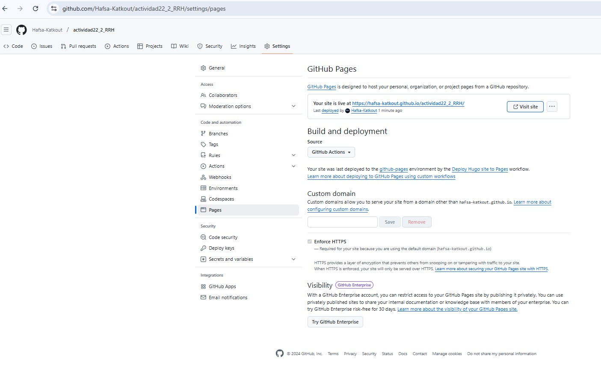
-
Comprobar el despliegue en el navegador
-> Una vez configurado todo, abrimos un navegador web e ingresamos la URL del sitio publicada por GitHub Pages para verificar que esté funcionando correctamente.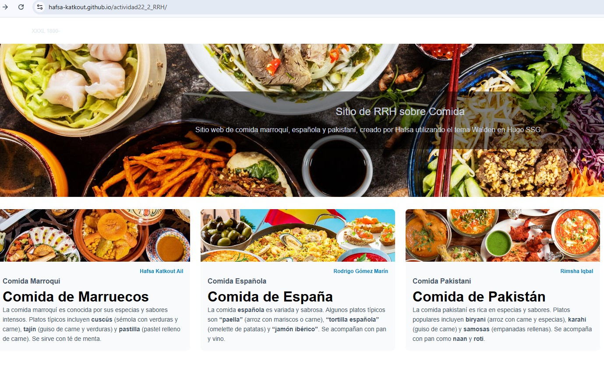
Desplegar el Sitio en Cloudfare :
-
Acceder a nuestra cuenta de Cloudflare
-> Ingresamos a nuestra cuenta de Cloudflare y accedemos al panel de control. -
Configurar el despliegue
-> No necesitamos incluir el comando de construcción del sitio, ya que el sitio ya está creado de forma local. Solo necesitamos configurarlo para que utilice la carpeta public generada en el proceso de construcción local. -
Seleccionar la carpeta public
-> En la configuración de Cloudflare, especificamos la carpeta public que contiene los archivos del sitio que queremos desplegar. -
Implementar el sitio
-> Implementamos el sitio . 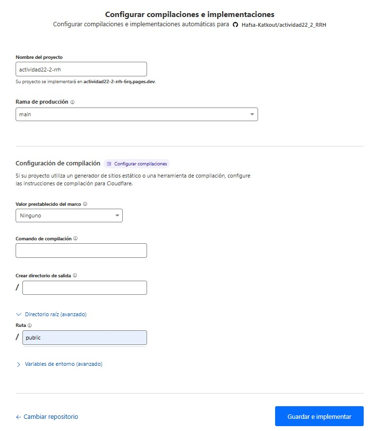 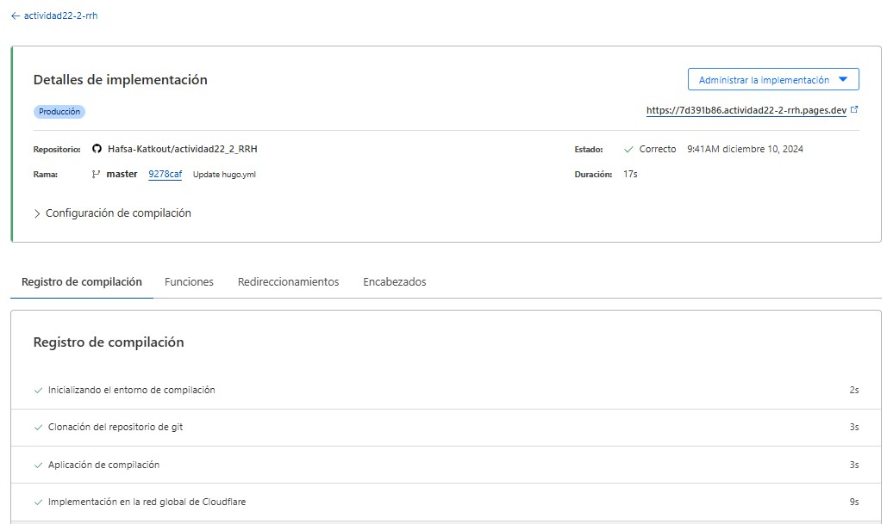 -
Comprobar el despliegue
-> Finalmente, accedemos a la URL del sitio en Cloudflare a través de un navegador para verificar que el sitio esté correctamente desplegado y accesible. 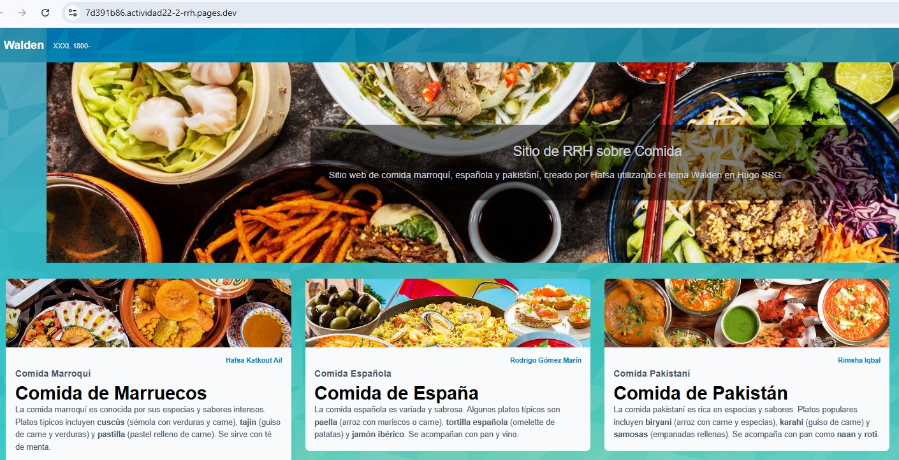 -
El enlace del sitio despligado en github pages : https://hafsa-katkout.github.io/actividad22_2_RRH/
-
El enlce del sitio despligado en cloudfare :https://actividad22-2-rrh.pages.dev/
Conclusión
Siguiendo los pasos proporcionados, logré crear un sitio estático con Hugo, personalizarlo con el tema Walden, y automatizar su publicación en GitHub Pages. Este proceso no solo facilita la creación y personalización de sitios web, sino que también permite un flujo de trabajo eficiente al integrar herramientas como GitHub y GitHub Actions para despliegue continuo. Ahora, con estos conocimientos, puedo seguir creando y personalizando más sitios con Hugo y mantenerlos actualizados de manera sencilla.